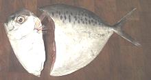
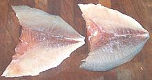

This Indo - Pacific fish is found from the eastern coast of Africa through the South Pacific islands and as far north as the southern tip of Japan. This species, the only member of the Menidae (Moonfish) family, can grow to nearly 12 inches but the photo specimen was 8-1/4 inches and weighed 7.7 ounces. In its home range moonfish is often dried and can be dried without salt. Having no scales it is not kosher and is not listed as threatened.
More on Varieties of Fish
(very large page).
|


|
This is a weirdly built fish, but more edible than you might expect for something that flat and bony. The flesh is moderately flavored, is firm raw and remains quite firm when cooked by any method. Gutting this fish neatly is a bit of a problem because the body cavity is small and vertical, only about 1/4 inch wide at the bottom of the fish. I find the best plan is to just cut off the head, taking the body cavity and innards with it as shown. You're not going to be losing much edible doing this. Use a combination of your filleting knife and kitchen shears to do this. You can fry this fish "pan dressed" with just a dusting of rice flour and it's not that hard to disassemble on the plate because the bones are pretty much fused to the fins at the edge of the fish. Start from the outside edges and work inward. It's less easy to eat if steamed because the bones and fins tend to fall apart and make a mess that's difficult to recover the flesh from. On the other hand, it's surprisingly easy to fillet this fish becaue the flesh is so firm. Almost no edible flesh will be lost if you're careful. Filleting makes eating this fish a lot neater and less trouble, or the fillets can be used in recipes. Yield is surprisingly good with a 4.6 ounce fish yielding 2.3 ounces skin-on (50%) and 2.0 ounces skinless (43%). The skin shrinks very little when fried so can be left on even for frying fillets. While very thin the skin is reasonably strong so it can be removed by the usual long knife and cutting board method. |